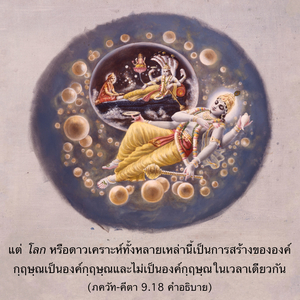
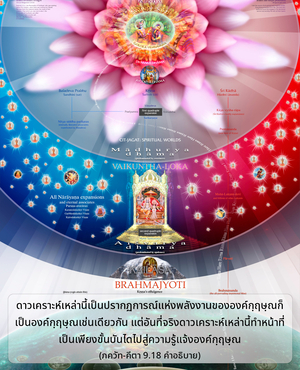
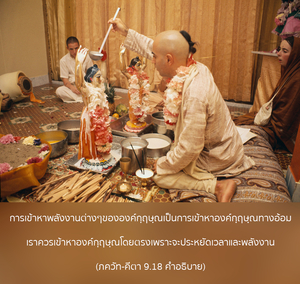

ข้าคือจุดมุ่งหมาย ผู้ค้ำจุน อาจารย์ พยาน ตำหนัก ร่มโพธิ์ร่มไทร และเพื่อนที่รักที่สุด ข้าคือการสร้างและการทำลาย พื้นฐานของทุกสิ่งทุกอย่าง ข้าคือที่พักและเมล็ดพันธุ์นิรันดร



คติ หมายถึง จุดมุ่งหมายที่เราต้องการที่จะไป แต่จุดมุ่งหมายสูงสุด คือ องค์กฺฤษฺณถึงแม้ว่าผู้คนไม่จะรู้ ผู้ที่ไม่รู้จักองค์กฺฤษฺณจะถูกนำไปในทางที่ผิด และสิ่งที่สมมติว่าเป็นขบวนการในความเจริญก้าวหน้าเป็นเพียงส่วนหนึ่ง หรือเป็นภาพหลอน มีหลายคนที่มีจุดมุ่งหมายอยู่ที่เทวดา และจากการปฏิบัติตามวิธีการต่างๆ อย่างเคร่งครัดจะบรรลุถึงดาวเคราะห์ต่างๆ เช่น จนฺทฺรโลก, สูรฺยโลก, อินฺทฺรโลก, มหโรฺลก ฯลฯ แต่ โลก หรือดาวเคราะห์ทั้งหลายเหล่านี้เป็นการสร้างขององค์กฺฤษฺณ เป็นองค์กฺฤษฺณ และไม่เป็นองค์กฺฤษฺณในเวลาเดียวกัน ดาวเคราะห์เหล่านี้เป็นปรากฏการณ์แห่งพลังงานขององค์กฺฤษฺณก็เป็นองค์กฺฤษฺณเช่นเดียวกัน แต่อันที่จริงดาวเคราะห์เหล่านี้ทำหน้าที่เป็นเพียงขั้นบันไดไปสู่ความรู้แจ้งองค์กฺฤษฺณ การเข้าหาพลังงานต่างๆ ขององค์กฺฤษฺณเป็นการเข้าหาองค์กฺฤษฺณทางอ้อม เราควรเข้าหาองค์กฺฤษฺณโดยตรง เพราะจะประหยัดเวลาและพลังงาน ตัวอย่างเช่น หากเป็นไปได้ที่จะขึ้นไปบนดาดฟ้าของอาคารโดยลิฟท์แล้วทำไมต้องขึ้นไปทางบันไดทีละขั้น ทุกอย่างอิงอยู่ที่พลังงานขององค์กฺฤษฺณ ปราศจากที่พึ่งแห่งองค์กฺฤษฺณจะไม่มีสิ่งใดสามารถอยู่ได้ องค์กฺฤษฺณทรงเป็นผู้ปกครองสูงสุด เพราะว่าทุกสิ่งทุกอย่างเป็นของพระองค์ และทุกสิ่งทุกอย่างอยู่บนพลังงานของพระองค์ องค์กฺฤษฺณทรงสถิตในหัวใจของทุกชีวิต ทรงเป็นพยานสูงสุด ประเทศต่างๆ หรือดาวเคราะห์ต่างๆ ที่เราอาศัยอยู่ก็เป็นองค์กฺฤษฺณเช่นเดียวกัน องค์กฺฤษฺณทรงเป็นจุดมุ่งหมายและที่พึ่งสูงสุด ฉะนั้น เราควรพึ่งองค์ศฺรีกฺฤษฺณเพื่อการปกป้องคุ้มครอง หรือเพื่อทำลายล้างความทุกข์โศก และเมื่อใดที่เราต้องการการปกป้องคุ้มครอง เราควรรู้ว่าการปกป้องคุ้มครองของพวกเรานั้นจะต้องเป็นพลังงานชีวิต องค์กฺฤษฺณทรงเป็นชีวิตที่สูงสุด เนื่องจากองค์กฺฤษฺณทรงเป็นแหล่งกำเนิดของแหล่งกำเนิดของพวกเรา หรือเป็นพระบิดาสูงสุด ไม่มีผู้ใดจะเป็นเพื่อนที่ดีไปกว่าองค์กฺฤษฺณ หรือผู้ใดจะมาเป็นผู้ปรารถนาดีที่ดีไปกว่าองค์กฺฤษฺณ องค์กฺฤษฺณทรงเป็นแหล่งกำเนิดเดิมแท้ของการสร้าง และเป็นที่พักพิงขั้นสุดท้ายหลังการทำลายล้าง ดังนั้น องค์ศฺรีกฺฤษฺณจึงทรงเป็นแหล่งกำเนิดนิรันดรของแหล่งกำเนิดทั้งปวง